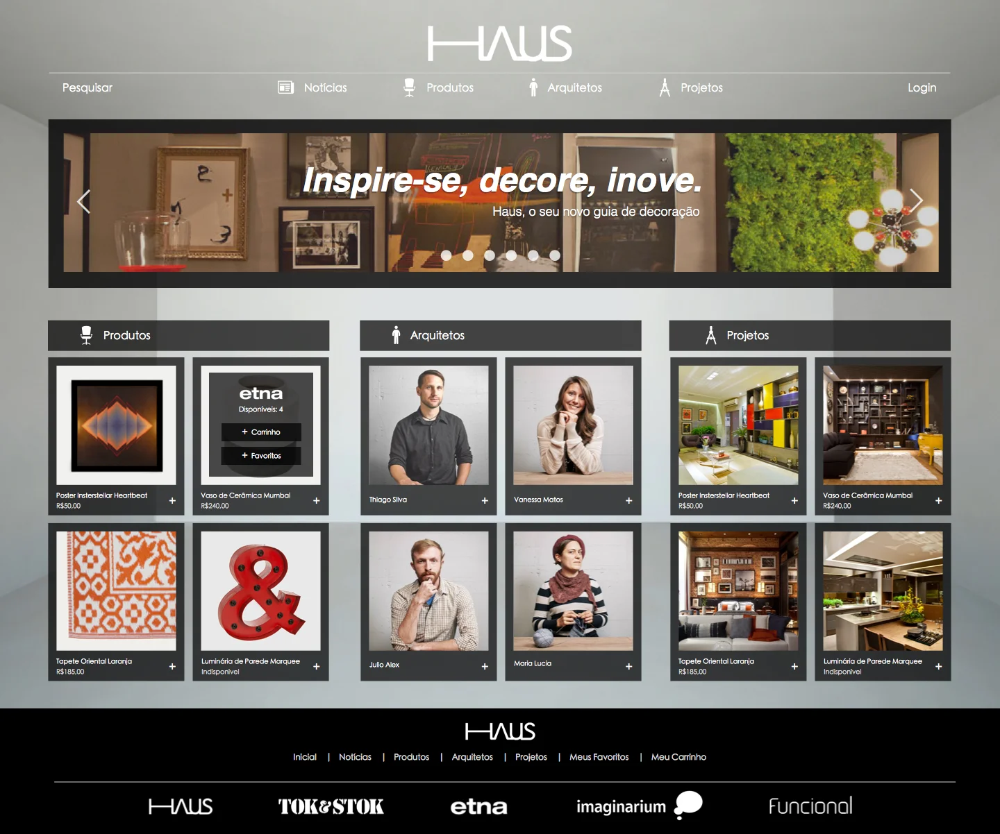
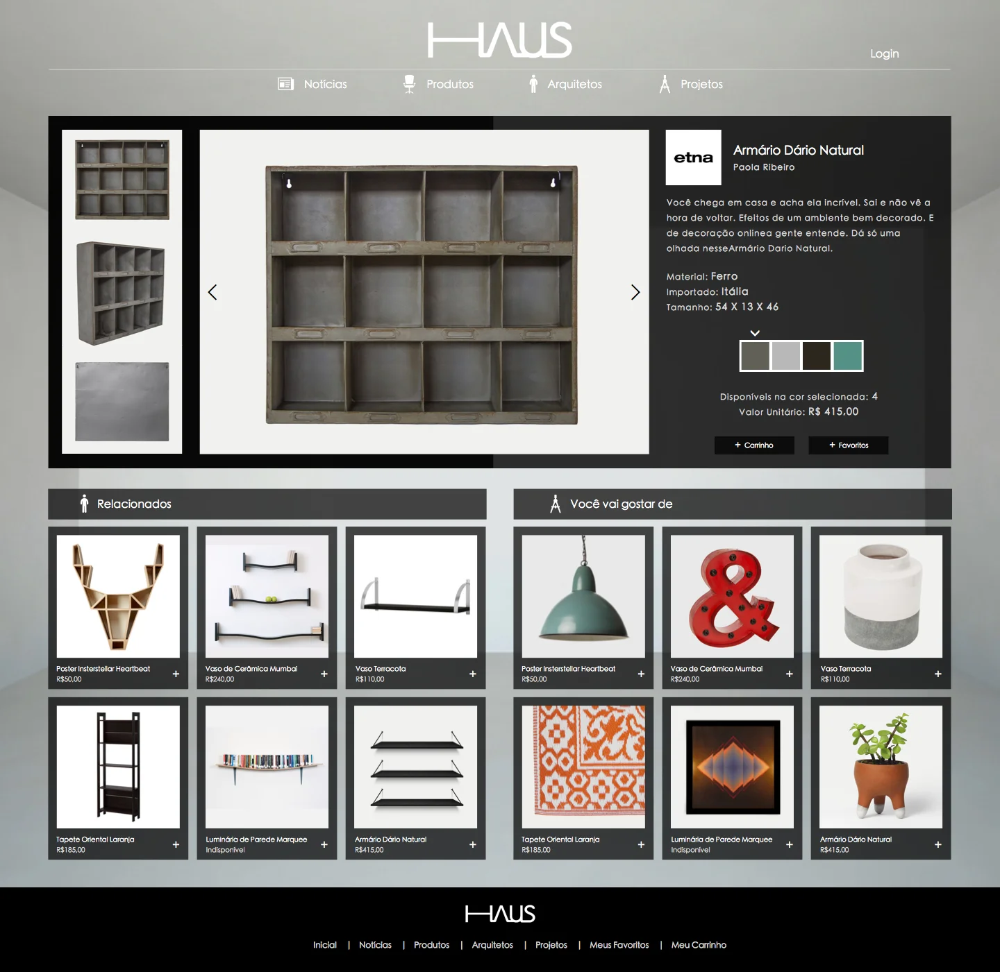
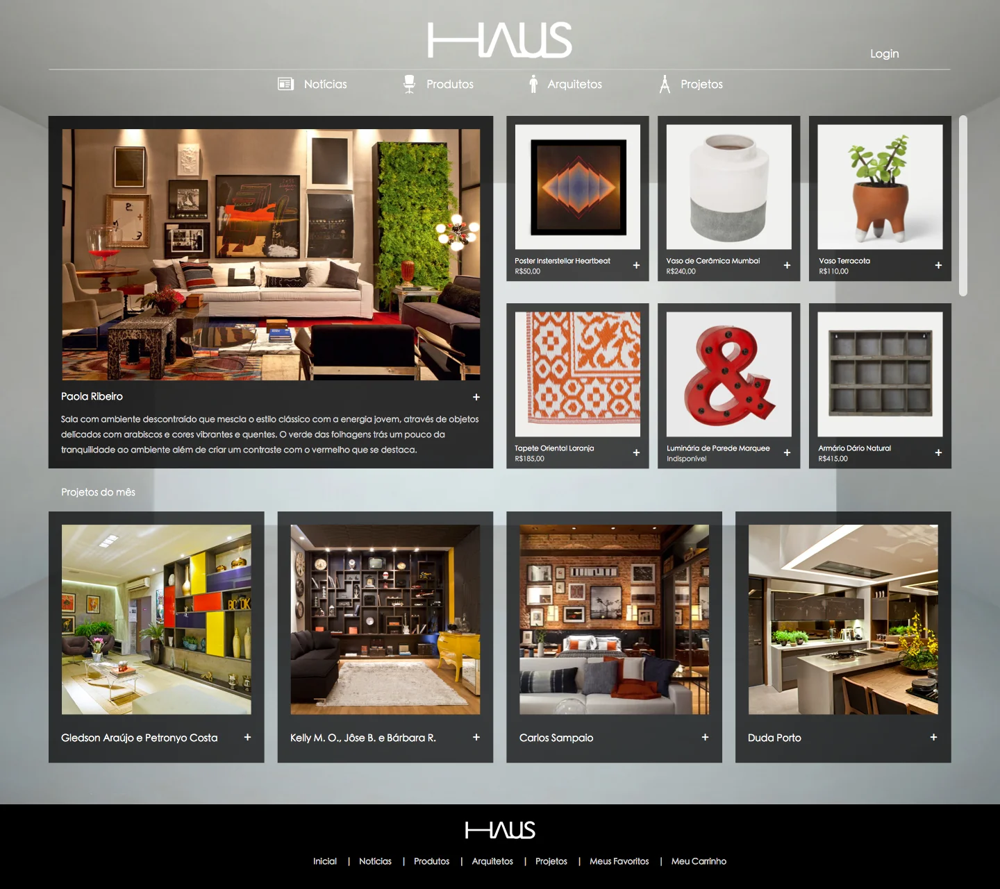
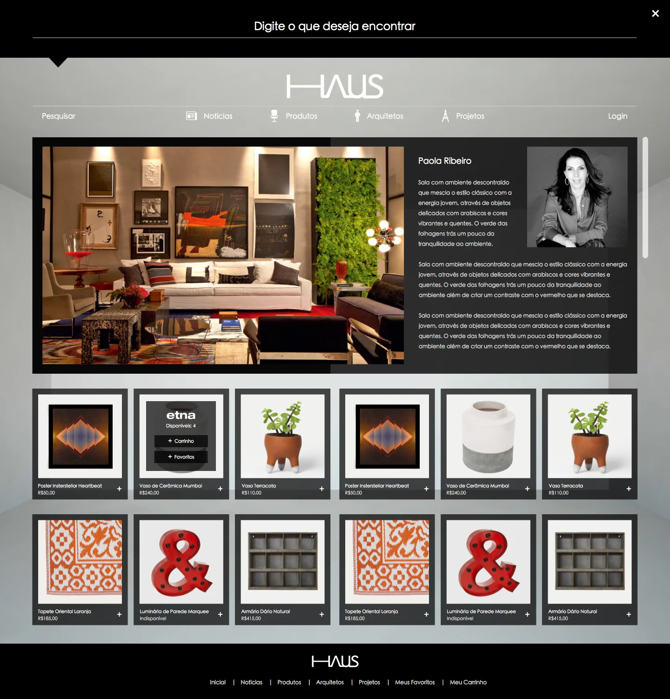
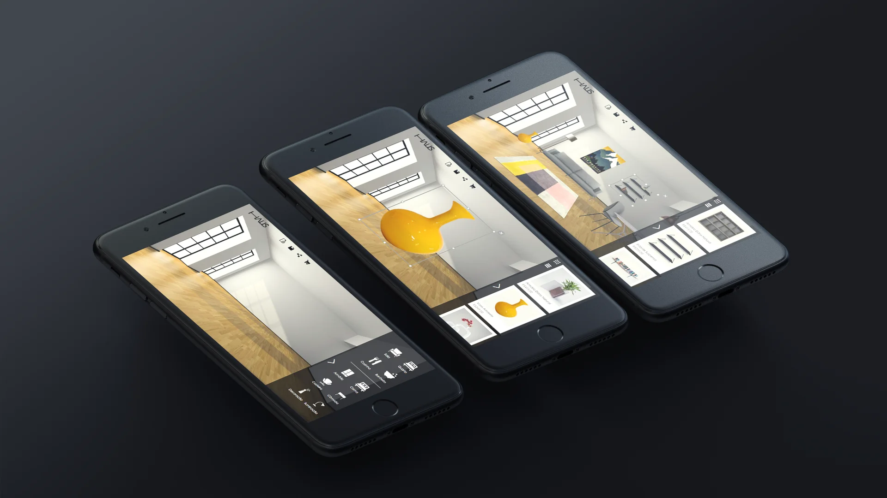
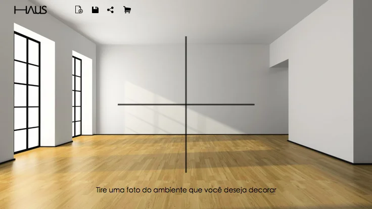
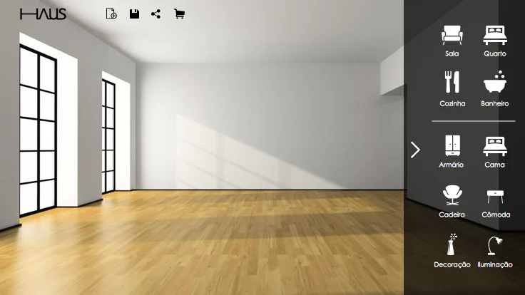
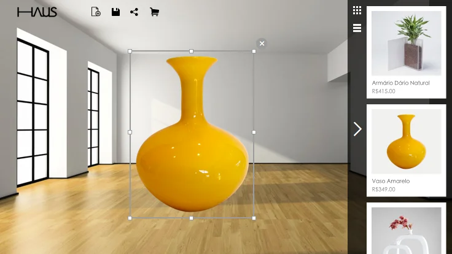
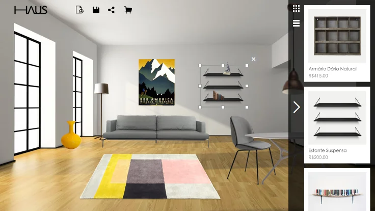

Overview
Haus is a concept for an interior design website and mobile app. The website connects three things: a shop of decor products, a directory of architects, and a gallery of real projects for inspiration — all cross-linked, so a piece you like in a project leads straight to buying it.
The companion mobile app takes that a step further, letting people preview furniture and decor in their own home before buying it, using their phone's camera.
Landing page
"Inspire-se, decore, inove" — get inspired, decorate, innovate. The landing page opens with a rotating gallery of decorated spaces, then surfaces the three pillars of the site side by side: Products, Architects, and Projects.

Products page
Each product page covers material, dimensions, and country of origin, with color variants and live stock count, plus "Related" and "You'll also like" shelves to keep people browsing.

Projects page
Every month, Haus publishes a new decorated space. The projects page leads with that month's featured room, alongside the products used in it, and a grid of the month's other submissions below.

Opening a project introduces the architect behind it, alongside their write-up of the space and the products they used or that suit the same style.

Decoration app
The Haus app lets people place real products from the catalog into a photo of their own room before buying anything. Take a photo, pick a room type and object category, place and resize the piece, then share the result or buy the whole look.




